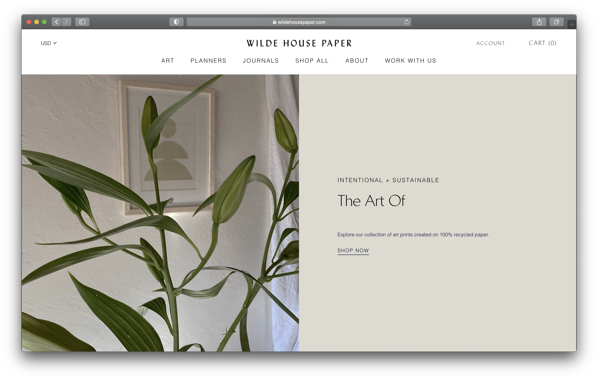
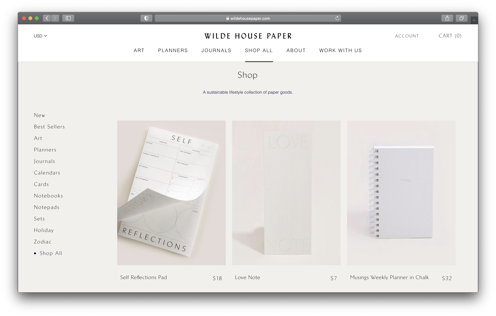
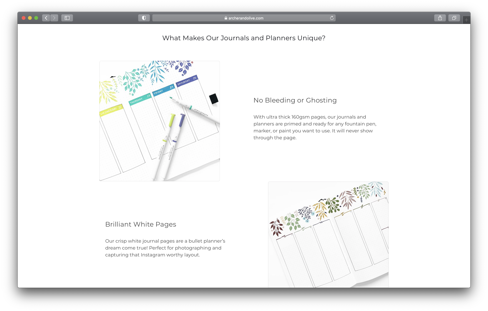
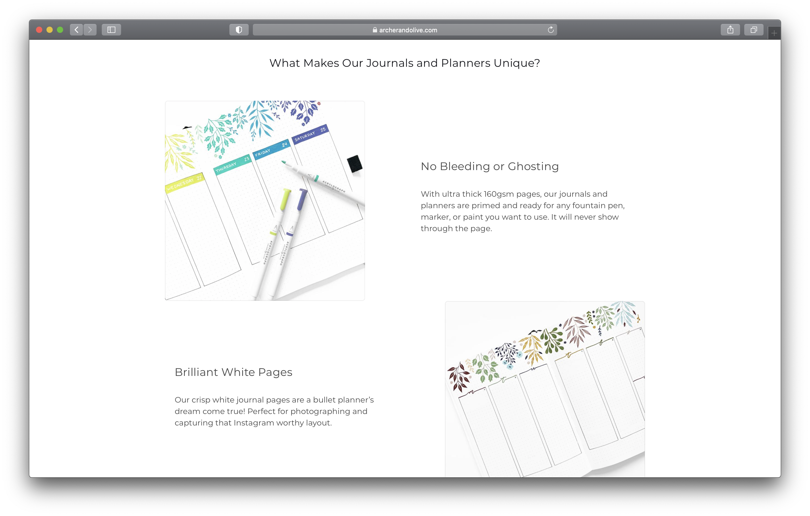
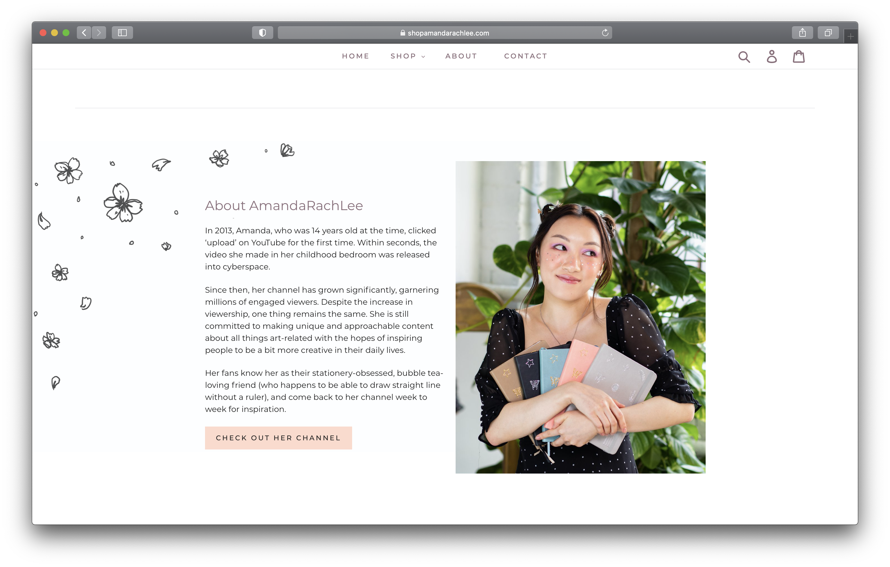
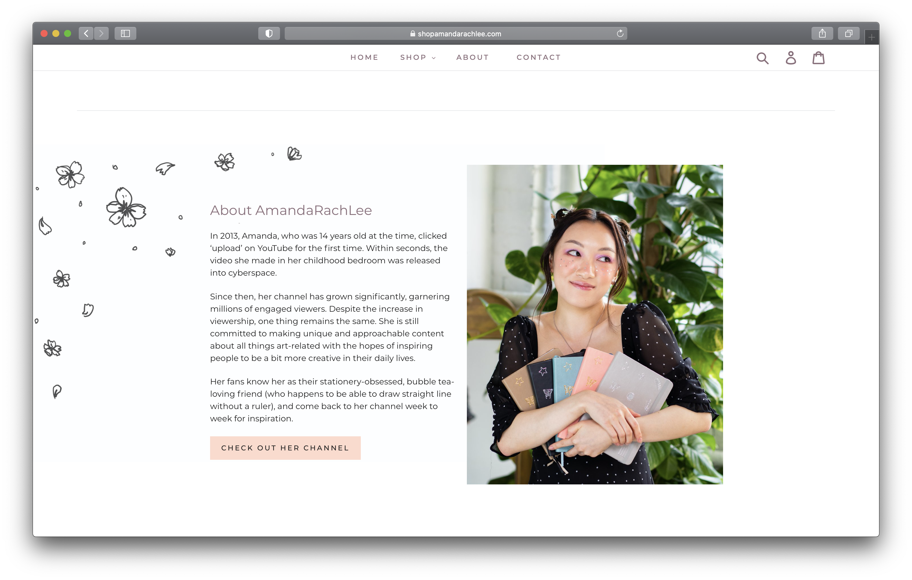

Final project proposal
Introduction
Cindy’s Study
Cindy’s Study is based in San Francisco, CA and launched in 2020 as a marketplace for stationery. The founder, Cindy, has a love for journaling and wanted to create this small business in hopes to provide a place for people to find unique and high-quality stationery goods, such as notebooks, pens, washi tapes, that are both beautifully designed and affordable.
Target audience
Cindy’s Study is for anyone looking for a high-quality notebook to use as a journal, planning, or for everyday note taking. These people can include students and people who have heavy workloads in general who would benefit from planning out their routine in a journal. Other people can also include artistic and creative minds who are looking to use journaling as a way to express themselves.
Primary tasks and goals of this audience would be mainly to stay organized or stay creative. By visiting this website, they can find notebooks of different sizes and paper weights that suit their needs. For everyday pencil and paper note taking, a 100gsm paper weight notebook can be used, while art with heavy pen/marker ink and paint layering would require a 160gsm notebook to avoid bleeding and ghosting through the pages. Lastly, Cindy’s Study can also provide other stationery supplies that can assist in the journaling process, so that visitors of this site can find all of their needs in one place.
Comparative analysis
Website 1
 Website 2
 

Website 3
 

Website content
Home
Hello and welcome!
Cindy’s Study is a sustainable stationery shop created in California. If you want to add a daily dose of creativity, mindfulness, and productivity to your life, you've come to the right place.
[Close-up shot of a stack of notebooks on a table.]
Shop
-
Notebooks
160gsm Notebooks
100gsm Notebooks
[Two notebooks on a table with decorations.]
-
Washi Tapes
Dark monochrome
Light monochrome
Dark neutral
Light neutral
Dreamy pastels
[Set of washi tapes on a notebook.]
-
Pens
Warm fall collection
Cool fall collection
Jewel collection
Primary colors collection
[Set of pens from the primary colors collection.]
-
Stamps
Alphabet set
Calendar set
Tracker set
[Set of stamps on a table.]
About
Cindy’s Study launched in 2020 as a marketplace for stationery and is based in San Francisco, CA. The founder, Cindy, has a love for journaling and wanted to create this small business in hopes to provide a place for people to find unique and high-quality stationery goods. This shop also focuses on beautifully designed, sustainably produced, and affordable products.
A note from Cindy:
I started Cindy’s Study for two reasons: to go after the dream of launching my own business and to help others to go after their own dreams. Journaling, stationery, and workspace decor brings me peace and creative flow and my goal is for our products to do the same for you. In the end, I hope that our collection of stationery adds a daily dose of creativity, productivity, and mindfulness to your life.
Thank you so much for your love and support!
[Overhead shot of a person writing in a notebook.]
Find Us
Location
48 Silver Ave.
San Francisco CA, 94134
[Interior of stationery shop.]
Contact
(415) 789-4679
contact@cindysstudy.com